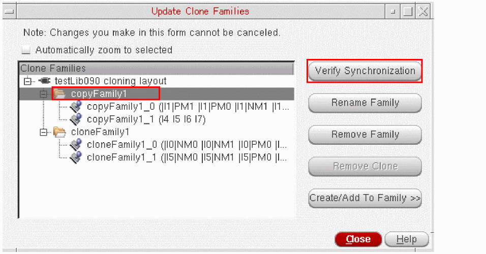

Verifying a Clone Family
If you edit one or more members of a clone family in an application other than Layout XL, you might need to verify the family to ensure its members are consistent with each other.
You can verify one or more clone families with a single button push. Layout XL checks the consistency of the clones in each family and takes the following actions.
- Any clone that is out of sync with the other clones in the same family is removed from the family.
-
If two or more clones are out of sync with the family but in sync with each other, they are moved to a new clone family. In this case, both the original family and the new family are renamed to follow the
orginalFamilyName_indexnomenclature. - If all the clones in the family are different, the family is removed.
To verify that a clone family is synchronized:
-
From the layout window menu bar, choose Connectivity – Update – Clone Families.
The Update Clone Families form is displayed.
 -
Select the clone family you want to verify and click Verify Synchronization.
To verify that all the clone families are synchronized, click Verify Synchronization with none of the families selected.
Layout XL modifies the clone families as outlined above and prints the results to the CIW. - Click Close to dismiss the Update Clone Families form.
Related Topics
Return to top